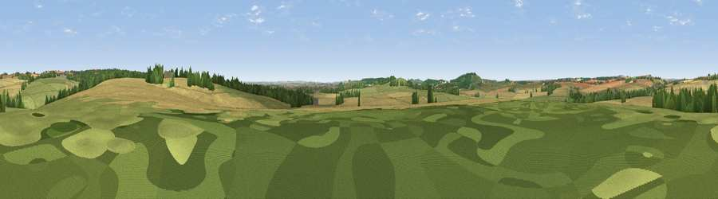

Viewpoint near Collingbourne Ducis
#24972 in England · top 38% of its area beats it · near Collingbourne Ducis · access?Where it is
The exact computed spot (SU 25385 53017). Click the marker for map links.
Public access: no public right of way or access land is recorded at this exact spot — it may be on private land. Computed from Natural England's CRoW access layer and OpenStreetMap rights of way — not the legal definitive map. Always verify locally.
The view, rendered

A 360° render of this exact spot computed from the terrain model, tree cover and land cover — summer colours, afternoon light, calibrated against photographs of famous viewpoints. Real trees, hedges and buildings will differ in detail.
The panorama
Grey silhouette: terrain skyline in each direction (720 bearings, Earth curvature and refraction included). Dashed green: skyline with trees (+15 m) and buildings (+8 m) as obstacles. Blue strip: how far the ground is visible on each bearing.
Where the view opens
Wedge length = distance to the farthest visible ground on that bearing (vegetation-aware). Rings at 10, 25 and 50 km.
What fills the view
50% cropland · 37% grassland · 11% woodland · 2% built-up
Angular shares of the visible panorama (visual magnitude), not map area. Landscape diversity 0.45 (0–1 Shannon).
Key numbers
More beautiful places nearby
The staircase of upgrades: each row has a higher view potential than everything closer. Driving times are estimates from straight-line distance, calibrated against real road routing — check an actual route before setting out.
| Place | Direction | Drive | Score |
|---|---|---|---|
| Viewpoint near Ludgershall | SSW · 2 km | ~5 min | 57.4 |
| Viewpoint near Tidworth | WSW · 4 km | ~10 min | 61.0 |
| Wexcombe Down | NNE · 5 km | ~12 min | 66.9 |
| Viewpoint near Bulford | SSW · 12 km | ~22 min | 70.3 |
| Martinsell viewpoint | NW · 13 km | ~24 min | 76.9 |
| Viewpoint near Berwick St John | SW · 46 km | ~66 min | 78.2 |
| Viewpoint near Buriton | SE · 57 km | ~79 min | 80.0 |
| Beacon Hill | ESE · 65 km | ~88 min | 85.8 |
51.27573, -1.63747 · source: osm peak · position refined by local search. Computed location — check access rights before visiting.